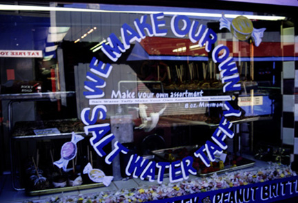

Taffy Anyone? This candy store, called Carousel Fine Candies, is located along the left side as you continue your walk along the wharf. Here you can find a variety of candies including, as the sign states, salt water taffy and peanut brittle, various other candy, ice cream, caramel apples, and more. My favorite is the bubble gum ice cream with a caramel apple on the side...mmmm!! The photograph was originally produced with late afternoon sun and a 35 mm camera using Provia slide film, shutter speed 60, F5.6. Photo copyright Andrea L. Arredondo, May 11, 2000.
Updated by Andrea Arredondo
5/19/00